QuizAArena - afbeeldingscontrole
Controleer of de afbeelding overeenkomt met de naam. Connectoren hergebruiken bestaande bestanden. IPv4 heeft geen productafbeeldingen.
hardware (33/50)
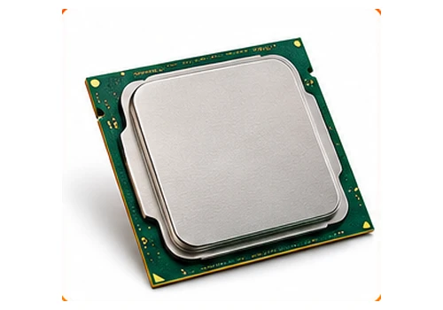
Processor (CPU)
assets/hardware/processor.webp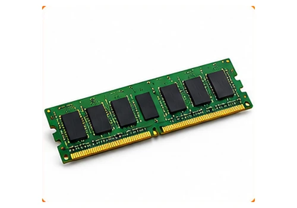
Werkgeheugen (RAM)
assets/hardware/ram.webp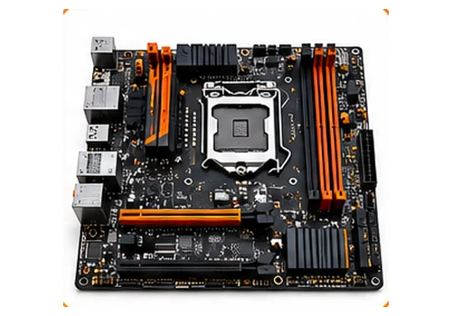
Moederbord
assets/hardware/moederbord.webp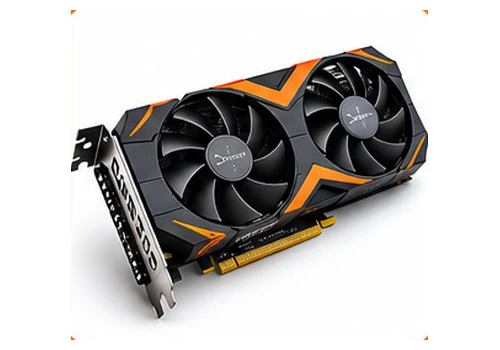
Grafische kaart
assets/hardware/grafische-kaart.webp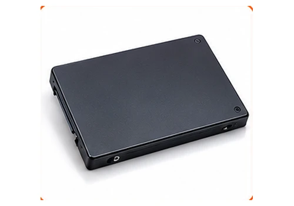
2,5 inch SATA SSD
assets/hardware/sata-ssd.webp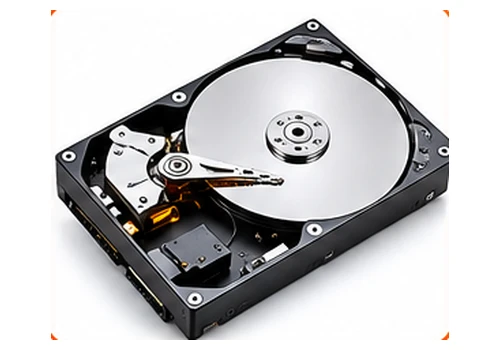
Harde schijf (HDD)
assets/hardware/harde-schijf.webp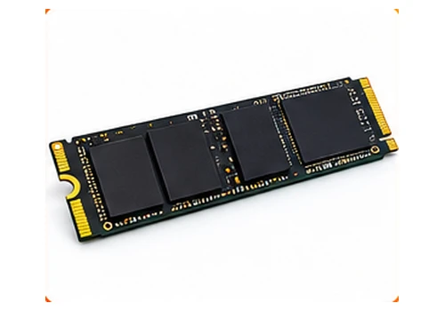
M.2 SSD
assets/hardware/m2-ssd.webp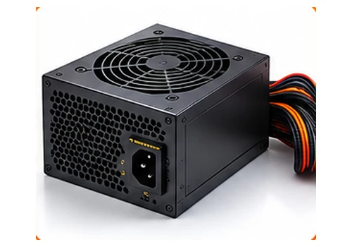
Voeding (PSU)
assets/hardware/voeding.webp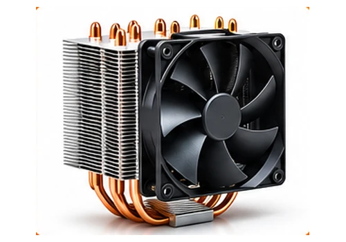
Processorkoeler
assets/hardware/processorkoeler.webp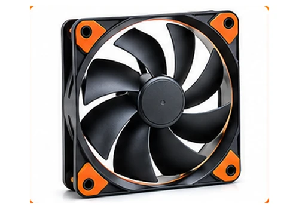
Behuizingsventilator
assets/hardware/behuizingsventilator.webp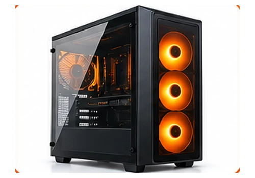
Computerbehuizing
assets/hardware/computerbehuizing.webp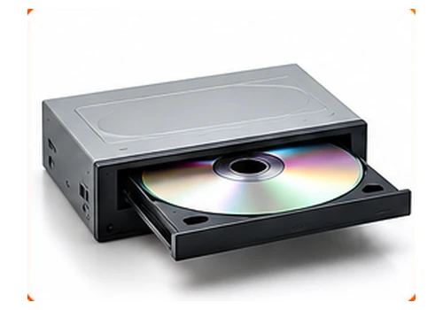
Optische drive
assets/hardware/optische-drive.webp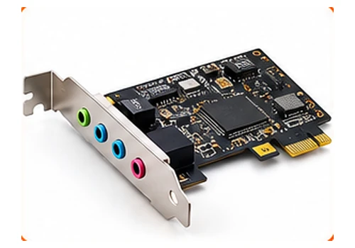
Geluidskaart
assets/hardware/geluidskaart.webp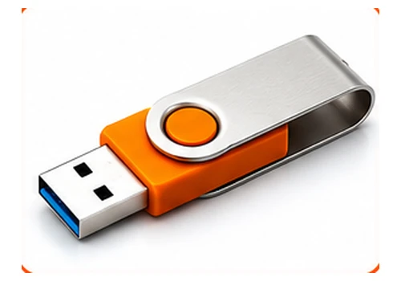
USB-stick
assets/hardware/usb-stick.webp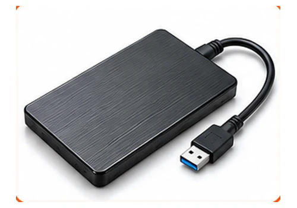
Externe schijf
assets/hardware/externe-schijf.webp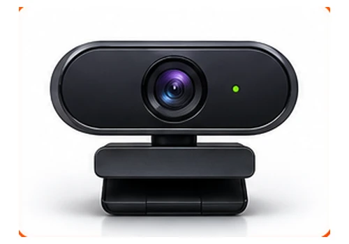
Webcam
assets/hardware/webcam.webp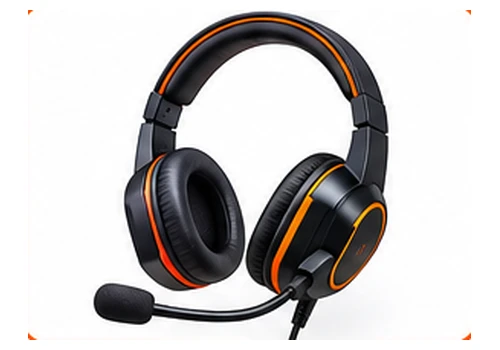
Headset
assets/hardware/headset.webp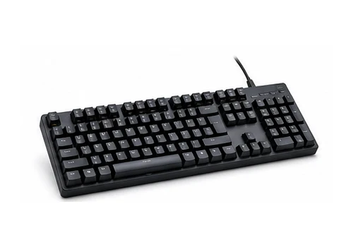
Toetsenbord
assets/hardware/toetsenbord.webp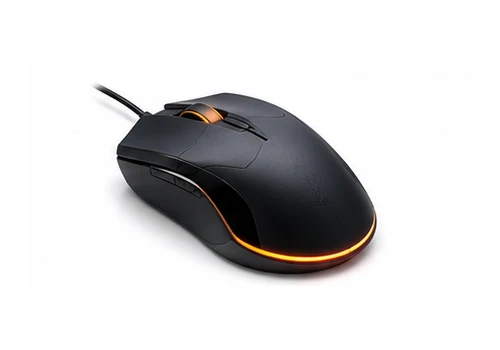
Muis
assets/hardware/muis.webp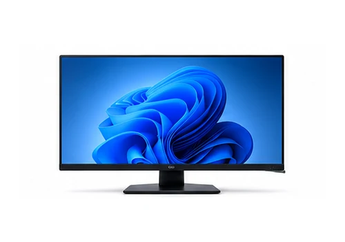
Monitor
assets/hardware/monitor.webp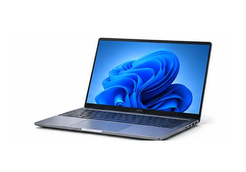
Laptop
assets/hardware/laptop.webp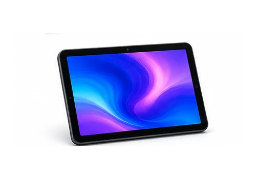
Tablet
assets/hardware/tablet.webp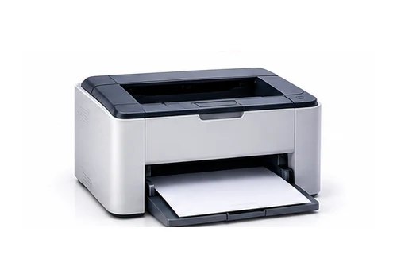
Printer
assets/hardware/printer.webp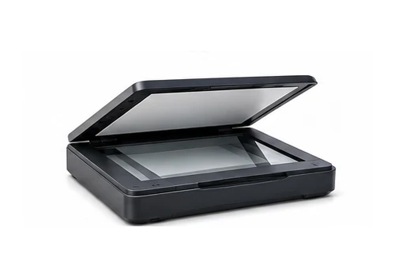
Flatbedscanner
assets/hardware/scanner.webp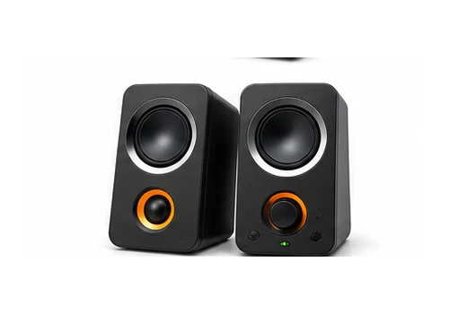
Luidsprekers
assets/hardware/speakers.webp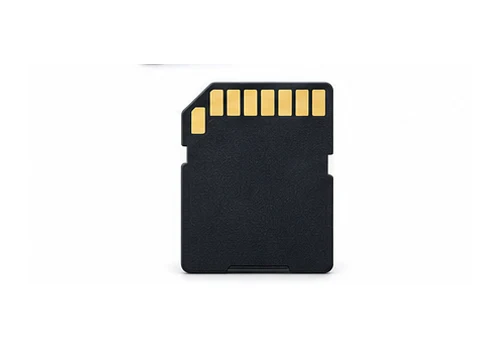
SD-kaart
assets/hardware/sd.webp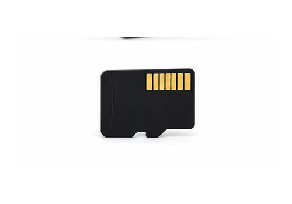
MicroSD-kaart
assets/hardware/microsd.webp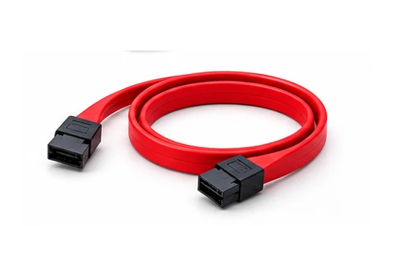
SATA-datakabel
assets/hardware/sata.webp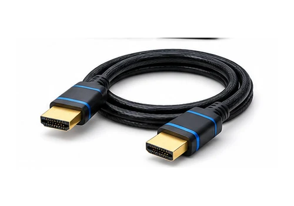
HDMI-kabel
assets/hardware/hdmi.webp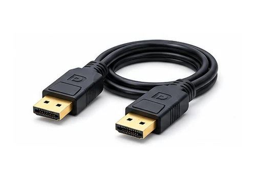
DisplayPort-kabel
assets/hardware/displayport.webp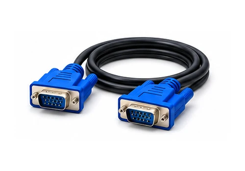
VGA-kabel
assets/hardware/vga.webp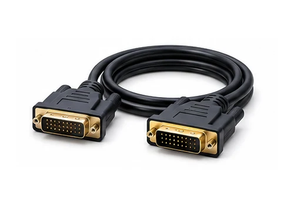
DVI-kabel
assets/hardware/dvi.webp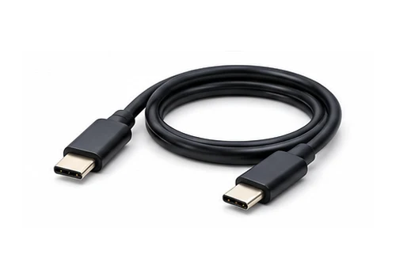
USB-C-kabel
assets/hardware/usbc.webpnetwork (20/50)
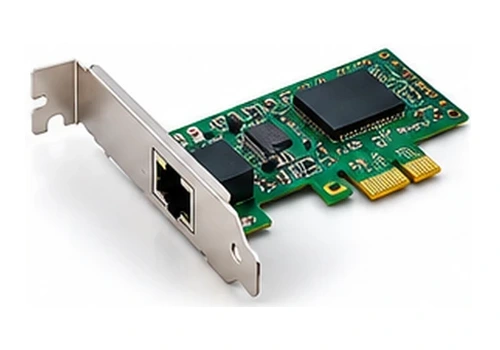
Ethernet-netwerkkaart
assets/network/netwerkkaart.webp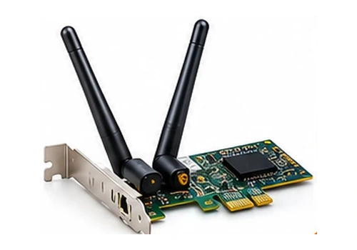
Wifi-netwerkkaart
assets/network/wifi-kaart.webp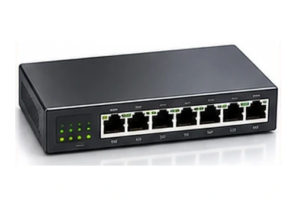
Netwerkswitch
assets/network/netwerkswitch.webp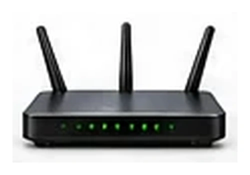
Wifi-router
assets/network/router.webp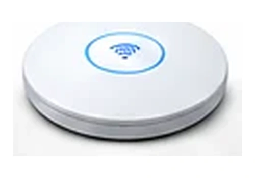
Accesspoint
assets/network/accesspoint.webp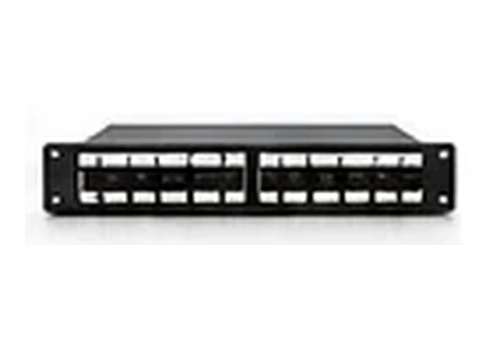
Patchpaneel
assets/network/patchpanel.webp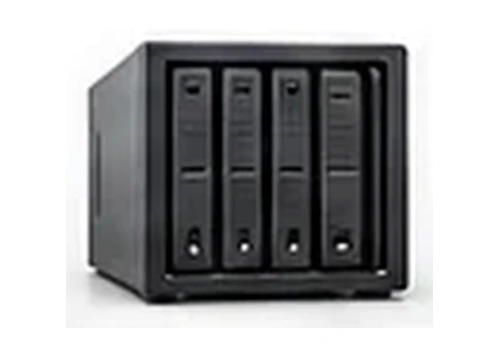
NAS
assets/network/nas.webp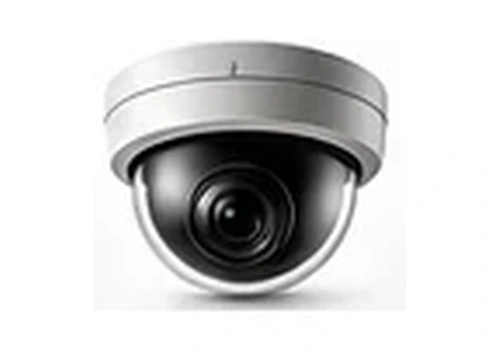
IP-camera
assets/network/ipcamera.webp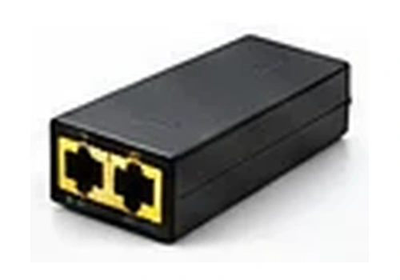
PoE-injector
assets/network/poe.webp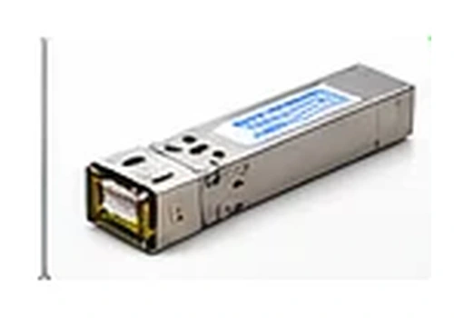
SFP-module
assets/network/sfp.webp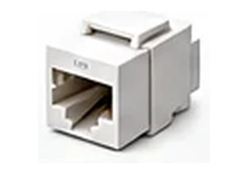
Keystone-module
assets/network/keystone.webp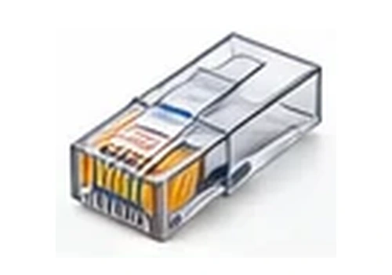
RJ45-connector
assets/network/rj45.webp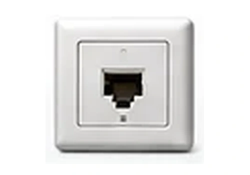
Netwerkwandcontactdoos
assets/network/wandcontactdoos.webp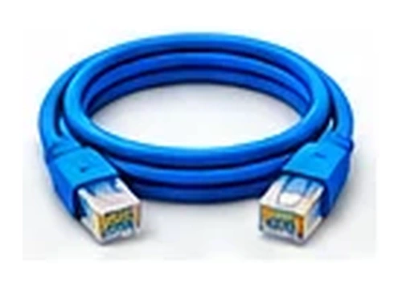
Ethernet-patchkabel
assets/network/utp.webp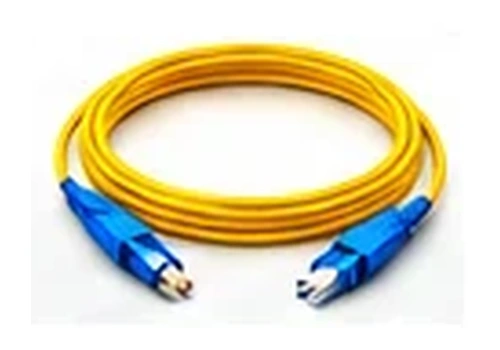
Glasvezelpatchkabel
assets/network/fiber.webp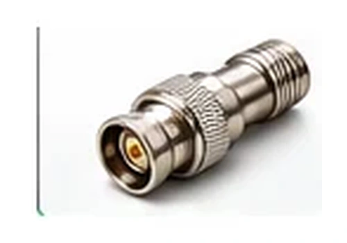
BNC-connector
assets/network/bnc.webp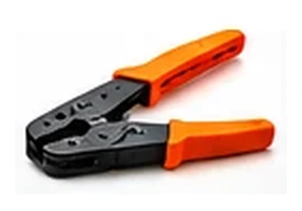
Krimptang
assets/network/krimptang.webpLSA-punchdowntool
assets/network/punchdown.webpNetwerkkabeltester
assets/network/tester.webpKabelstripper
assets/network/stripper.webpsoftware (19/50)
Windows
assets/software/windows.webpMicrosoft Office (klassiek logo)
assets/software/office.webpMicrosoft Word
assets/software/word.webpMicrosoft Excel
assets/software/excel.webpMicrosoft PowerPoint
assets/software/powerpoint.webpMicrosoft Outlook
assets/software/outlook.webpMicrosoft Teams
assets/software/teams.webpMicrosoft OneDrive
assets/software/onedrive.webpMicrosoft SharePoint
assets/software/sharepoint.webpMicrosoft Edge
assets/software/edge.webpGoogle Chrome
assets/software/chrome.webpMozilla Firefox
assets/software/firefox.webpAdobe Acrobat
assets/software/acrobat.webpAdobe Photoshop
assets/software/photoshop.webpVLC Media Player
assets/software/vlc.webpZoom
assets/software/zoom.webpWhatsApp
assets/software/whatsapp.webpVisual Studio Code
assets/software/vscode.webpGitHub
assets/software/github.webpconnector (12/50)
SATA-datakabel
assets/hardware/sata.webpHDMI-kabel
assets/hardware/hdmi.webpDisplayPort-kabel
assets/hardware/displayport.webpVGA-kabel
assets/hardware/vga.webpDVI-kabel
assets/hardware/dvi.webpUSB-C-kabel
assets/hardware/usbc.webpKeystone-module
assets/network/keystone.webpRJ45-connector
assets/network/rj45.webpNetwerkwandcontactdoos
assets/network/wandcontactdoos.webpEthernet-patchkabel
assets/network/utp.webpGlasvezelpatchkabel
assets/network/fiber.webpBNC-connector
assets/network/bnc.webp